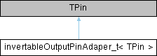

|
Speeduino
|
Loading...
Searching...
No Matches
|
Speeduino
|
An output pin that, optionally, can be have it's state inverted. More...
#include <invertableOutputPin.h>

Public Member Functions | |
| void | setInverted (bool isInverted) |
| Set the inversion behavior. | |
| void | setPinHigh (void) noexcept |
| Set the pin high. | |
| void | setPinLow (void) noexcept |
| Set the pin low. | |
An output pin that, optionally, can be have it's state inverted.
Convention is that setting the pin high is the "on" state. This class inverts that convention.
|
inline |
Set the inversion behavior.
|
inlinenoexcept |
Set the pin high.
|
inlinenoexcept |
Set the pin low.